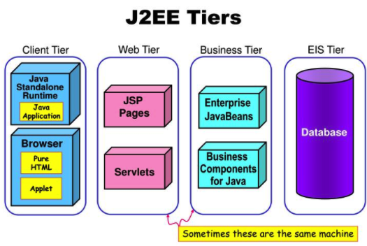
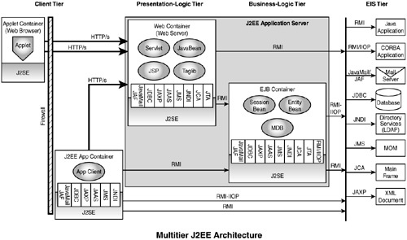

9.2. 分层式概念服务架构
人们常说，“分层式最流行的架构模式”。从字面上理解，这似乎意味着大家所进行的“分层”在思想层面上是一致的。但事实并非如此。在实践中，分层有不同的角度，并且互不矛盾。通常会总结为“3 + 1”流派。
Layer：逻辑层Tier：物理层- 按通用性分层
- 技术堆叠
9.2.1. Layer:逻辑层
逻辑层(Layer)重视职责的划分，职责之间常常是上层使用下层的关系--但是根本不关心上层和下层是否“能分布”在不同机器上。

- 图中的
Services层对下层Domain Model部分的访问，是一种跨机器的远程访问吗？
答案是：不知道，也不关心。整个架构图中的箭头表示的是逻辑上服务使用关系，而对物理角度是否是跨机器的访问方式并不关心。
按Layer分层 ≠ 按Tier分层。
- 图中的
User Interface、Services、Domain Model和Persistent Data是通用性逐渐增加吗？（”通用性越大，所处层次就越靠下“是按通用性分层的常见方式。）
答案是：无法确定那一层更通用。例如，作为最下层的Persistent Data层本来支持硬盘，但后来要支持磁盘阵列，再后来要支持SAN（存储区域网络），这都要求存Persistent Data层要有针对性的进行改变。
按Layer分层 ≠ 按通用性分层。
9.2.2. Tier: 物理层
物理层(Tier)指”能分布“在不同机器上的软件单元，不同的物理层之间必须有跨机器访问的能力--可以通过远程调用、或通讯协议等方式。

关于Tier这种分层方式， 最需要强调的是，几层(Tier)架构是看”能分布“的能力，不是看”实际部署情况“。
我们常说的
Java EE应该是N-Layer的，因为从逻辑上来看，Java EE里面有表现层、业务逻辑层和数据持久层。从物理上而言，这3层可以在不同的Tier上（表现层在PC上，业务逻辑层在应用服务器上，数据持久层在数据库服务器上），也可以在一个Tier上，比如Martin说过，如果把数据库、应用服务器和浏览器都装在一台电脑上，那么3-layer就在1-tier上了。
这段话问题不小。
毕竟，”N-Tiers架构“的一大好处是可伸缩性--业务量小的时候将N个Tier都部署在同一台机器上 ，等业务量大的时候再为每个Tier单独安排一台或一组机器，这恰恰是"N-Tiers架构"的目标！所以，一个系统如果架构设计时是”4-Tiers架构“的，并且开发时也实现了这一点，那么把它们部署在同一台机器上并没有改变”4-Tiers架构“。最终，工程师的实际部署方案觉得了系统是几层(Tier)架构，这未免荒唐。
其实，总结出”3级“映射关系（而不是”两级“）就清楚了：
逻辑层
Layer-> 物理层Tier-> 一台或一组计算机
关于按Tier分层 ，再看一例：微软的Azure虚拟网络系统，很明确的进行了不同的tier的划分，各层之间必然是能以进行跨机器方式的协议互相通讯的（只不过每个Tier的部署规模比较大罢了）。

9.2.3. 按通用性分层
严格来讲，按通用性分层是另一种Layer，但是，绝对有必要让它”独立门户“以引起实践者的足够重视。
按通用性分层式只：将通用性不同的部分划归不同的层，以此作为系统的总体切分方式。
一般而言，通用程度越大，所处层次就越靠下。

不同，嵌入式系统的分层架构有所不同：通用性最强的层位于中间，硬件相关的部分，以及应用特点部分分布位于下层和上层。

这种“中间通用、上下专用”的分层方式对可移植性关键的通信系统、控制系统、软件平台等情况都非常重要。
9.2.4. 技术堆叠
技术堆叠不是独立的架构，而是基于分层架构（或其他架构模式）提供的进一步说明。
下面这个两个架构模式都是按Tier分层，并明确了各个技术点。


图片来源：Category Archives: Day 15. Understanding J2EE Architecture
另一个例子，基本架构模式是基于通用性分层的，也加入技术堆叠的描述。

图片来源：Java SpringMVC